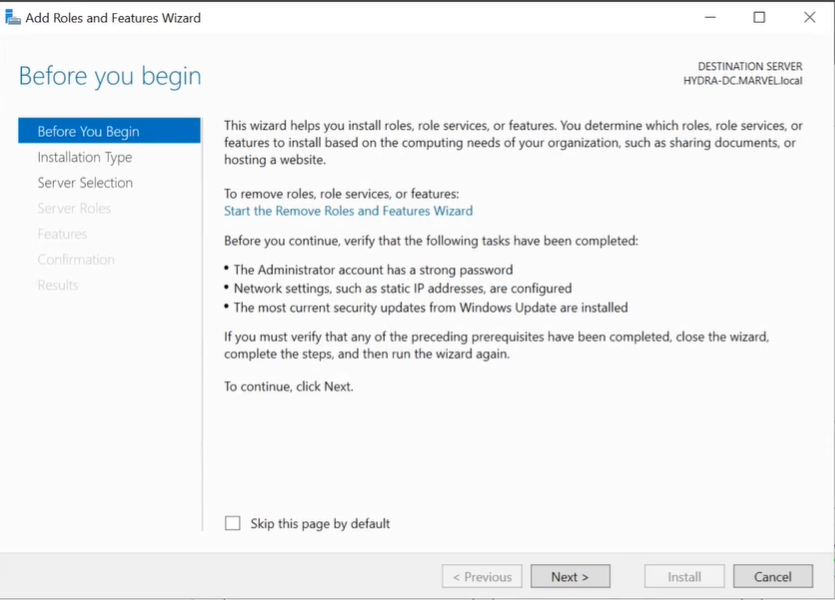

Have to do one more configuration to our lab in order to perform this attack.
We have to add one feature which is going to be a certificate.
Manage -> Add roles and Features

Than have to configure the Post deployment Configuration